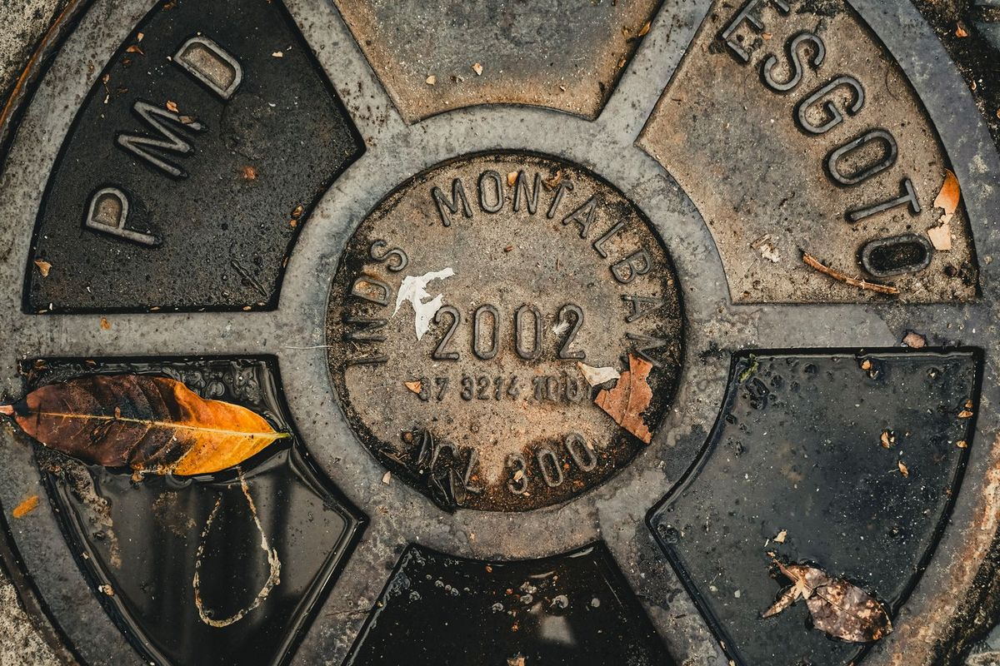

Direito do Consumidor Vol. 1 2026 · 16 de novembro de 2026Todos os informativos

Esgoto voltando para dentro de casa: quem responde?
Esgoto é serviço essencial e precisa funcionar com segurança.
Quem presta o serviço paga os danos, sem que o morador precise provar culpa.
Se a causa estiver no encanamento interno da casa, a empresa pode se livrar da conta.
Entenda melhor 2 min de leitura
O que a lei garante
Quem presta serviço público, seja empresa privada ou órgão do município que cuida da água e do esgoto, responde pelos danos que causar (Constituição, art. 37, § 6º). O Código de Defesa do Consumidor reforça: o serviço precisa ser adequado e seguro, e o prestador paga pelos defeitos mesmo sem culpa (arts. 14 e 22).
Rede pública ou encanamento da casa?
Essa é a pergunta que decide o caso. O prestador responde quando o esgoto volta por entupimento, rede pequena demais ou falta de manutenção. Se o defeito está só no encanamento interno do imóvel, ele pode alegar que a culpa é do próprio morador, defesa que a lei aceita.
O erro que enfraquece o caso
Limpar tudo e jogar fora os bens estragados antes de registrar o estrago. Sem fotos, vídeos e protocolo, fica a palavra do morador contra a da empresa.
O que fazer agora
- Fotografe e filme o esgoto dentro de casa e os bens atingidos, com data.
- Registre reclamação no prestador e guarde o protocolo.
- Peça vistoria e, se possível, um laudo de encanador ou engenheiro sobre a origem do problema.
- Guarde notas de limpeza, conserto e compra dos bens perdidos.
- Pergunte aos vizinhos se tiveram o mesmo problema: isso ajuda a mostrar que a falha é da rede.
Os prejuízos comprovados podem ser cobrados. Se houve risco à saúde ou a família precisou sair de casa, o juiz também pode analisar o pedido de indenização por dano moral.
Perguntas frequentes
O órgão do município que cuida do esgoto também responde?
Sim. Órgãos públicos e empresas privadas que prestam serviço público respondem pelos danos que causarem (Constituição Federal, art. 37, § 6º).
Preciso provar que o prestador teve culpa?
Não. Basta mostrar a falha do serviço, o prejuízo e a ligação entre os dois (CDC, art. 14).
Em que caso o prestador não paga?
Se provar que não houve falha no serviço ou que a culpa foi só do morador ou de outra pessoa (CDC, art. 14, § 3º).
Posso pedir indenização por dano moral?
O pedido pode ser analisado pelo juiz, principalmente quando houve risco à saúde ou a família teve de deixar a casa.
- Constituição Federal, art. 37, § 6º
- CDC, arts. 14, caput e § 3º, e 22
Publicado em . Texto informativo. Cada situação depende de análise própria, com base nos documentos e nos fatos do caso.

Filipe Ferreira
Filipe Ferreira Santana, advogado, OAB/ES 37.159. Pós-graduação em Direito de Família em curso na FMP. Filiado ao IBDFAM.
O escritório Ferreira Advogados atua em Direito de Família, Sucessões, Direito Trabalhista, Direito Civil, Direito do Consumidor e Direito Previdenciário, com atendimento presencial em Linhares/ES e on-line.
Para tirar dúvidas sobre este assunto ou agendar um atendimento, o contato é pelo WhatsApp.